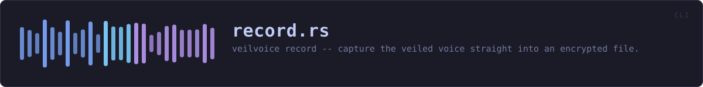

crates/veilvoice-cli/src/record.rs
veilvoice-cli · 360 lines · read the source here · or on GitHub
veilvoice record -- capture the veiled voice straight into an encrypted file.
What this is, next to the commands beside it
veilvoice live veils the voice and sends it to a device, keeping nothing. veilvoice anonymise veils a recording somebody already made, which means the original exists, in the clear, on their disk, and stays there unless they remember to shred it.
This is the third case and the one that leaves the least behind: the microphone goes in, the veiled voice comes out, and the only file that ever exists is the encrypted one.
Never a plaintext file, not even briefly
The recording is accumulated in a Tape, encoded into a Secret, and sealed from there. At no point is there a WAV on disk to be deleted afterwards, because a plaintext file that is written and deleted is exactly what veilvoice_crypto::shred explains cannot be reliably taken back on flash storage. Writing one and encrypting it afterwards would leave the original recoverable and the file merely tidy.
Why it stops on a keypress rather than on Ctrl-C
Ctrl-C ends the process, and a recording that ends by killing the process is a recording that is never sealed and never written. Catching the signal instead would mean a signal-handling dependency for one command, and this project argues at length against dependencies nobody has read.
So it stops on Enter, or after --seconds. Both are ordinary control flow, reach the sealing step, and need nothing new in the dependency tree. Ctrl-C still works and still abandons the recording, which is the correct thing for it to do: it is how somebody says "stop, and keep nothing".
In plain words
Records you with your voice already disguised, and saves it encrypted.
There is never an unencrypted copy of the recording anywhere, not even for a moment, so there is nothing to delete afterwards and nothing to recover from the disk.
WHAT THIS FILE CONTAINS
360 lines defining 5 functions (1 public), 1 type and 0 constants. Everything below is read out of the source, so it cannot disagree with the code.
The types it owns.
struct Sealingline 54 · How the recording is to be protected once it is made.
What happens when it runs. These are the ways in: public, and nothing else in this file calls them, so they are what an outside caller reaches first.
runline 65 · Run a recording session and seal what it captured.
reachesdestination,report,stop_signal,stamp
WHAT CALLS WHAT
The functions this file defines, and the calls between them. An edge means the callee's name appears, called, inside the caller's body. This is a syntactic reading, not a type-resolved one.
The same graph as Mermaid source
%%{init: {"theme":"base","themeVariables":{"background":"#1a1b26","primaryColor":"#1f2335","primaryTextColor":"#c0caf5","primaryBorderColor":"#7aa2f7","secondaryColor":"#16161e","tertiaryColor":"#16161e","lineColor":"#737aa2","textColor":"#c0caf5","mainBkg":"#1f2335","nodeBorder":"#7aa2f7","clusterBkg":"#16161e","clusterBorder":"#2f3549","fontFamily":"ui-monospace, SFMono-Regular, Consolas, monospace","fontSize":"14px"}}}%%
flowchart TD
n_run(["run<br/>line 65"])
n_report["report<br/>line 220"]
n_stop_signal["stop_signal<br/>line 264"]
n_destination["destination<br/>line 292"]
n_stamp["stamp<br/>line 307"]
n_destination --> n_stamp
n_run --> n_destination
n_run --> n_report
n_run --> n_stop_signal
click n_run href "https://github.com/tilas01/veilvoice/blob/main/crates/veilvoice-cli/src/record.rs#L65" "open the source"
click n_report href "https://github.com/tilas01/veilvoice/blob/main/crates/veilvoice-cli/src/record.rs#L220" "open the source"
click n_stop_signal href "https://github.com/tilas01/veilvoice/blob/main/crates/veilvoice-cli/src/record.rs#L264" "open the source"
click n_destination href "https://github.com/tilas01/veilvoice/blob/main/crates/veilvoice-cli/src/record.rs#L292" "open the source"
click n_stamp href "https://github.com/tilas01/veilvoice/blob/main/crates/veilvoice-cli/src/record.rs#L307" "open the source"
classDef entry fill:#1f2335,stroke:#7aa2f7,color:#c0caf5
class n_run entry
classDef helper fill:#1f2335,stroke:#bb9af7,color:#c0caf5
class n_report,n_stop_signal,n_destination,n_stamp helperThis site loads no third-party script, so it cannot run Mermaid; the diagram above is the same nodes and edges drawn by the generator instead. GitHub renders the source below directly.
ITEMS
| Item | Line | Documentation |
|---|---|---|
Sealing pub struct | 54 | How the recording is to be protected once it is made. |
run pub fn | 65 | Run a recording session and seal what it captured. |
report fn | 220 | What was captured, and what was actually obtained for it. |
stop_signal fn | 264 | A flag that becomes true when the recording should stop. |
destination fn | 292 | Where the recording goes, defaulting to a timestamped name here. |
stamp fn | 307 | YYYYMMDD-HHMMSS in UTC, for a filename. |